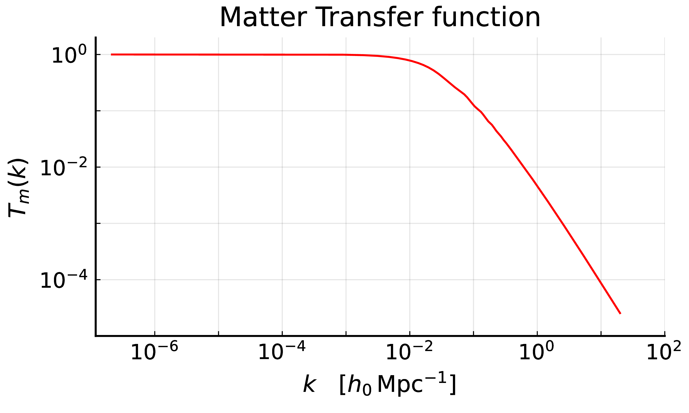
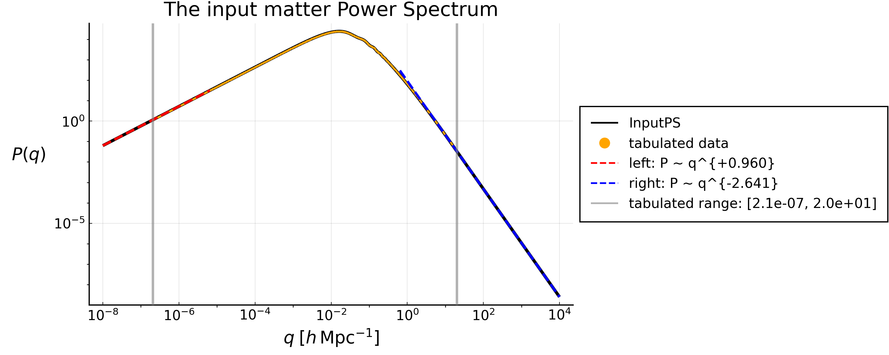
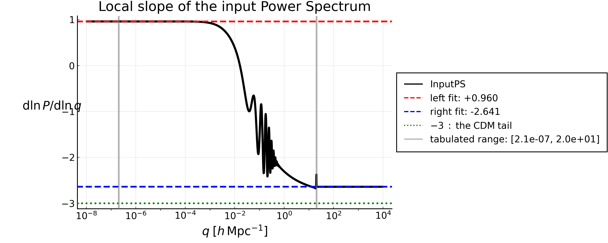

The input Power Spectrum
Everything GaPSE computes starts from a tabulated matter Power Spectrum $P(q)$, read by InputPS. Its two asymptotic power laws — the one at small $q$ and the one at large $q$ — are not a detail: they decide whether each moment
\[ \sigma_i = \int_{k_\mathrm{min}}^{k_\mathrm{max}} \frac{\mathrm{d}q}{2\pi^2} \, q^{\,2-i} \, P(q)\]
(Eq.(3) of The $I_\ell^n$ integrals) is a number on its own, or only together with the range it is computed over. Since the $\Delta\chi \rightarrow 0$ limits of every TPCF reduce to combinations of $\sigma_i$ (see The $\Delta\chi \rightarrow 0$ limits), and the $I_\ell^n$ reduce to them as $s \rightarrow 0$ (see The $I_\ell^n$ integrals), the answer matters.
The matter Power Spectrum at present day
In the $\Lambda$-CDM cosmology, the primordial curvature perturbations $\mathcal{R}$ are Gaussian, with a pure power-law spectrum (see the Planck 2018 results, A&A 641, A10 (2020)). Their power spectrum $P_\mathcal{R}(k)$ is defined through the two-point function in Fourier space:
\[ \langle \mathcal{R}(\mathbf{k}) \, \mathcal{R}^*(\mathbf{k}') \rangle = (2\pi)^3 \, \delta_\mathrm{D}^{(3)}(\mathbf{k} - \mathbf{k}') \, P_\mathcal{R}(k) \quad \quad (\mathrm{P}.1)\]
and it is usually quoted through the dimensionless power spectrum $\Delta^2_{\mathcal{R}}$, which at large scales goes as:
At large scales, it's known that:
\[\begin{align*} \Delta^2_{\mathcal{R}}(k) := \frac{k^3}{2\pi^2} P_\mathcal{R}(k) &\underset{k \rightarrow 0^{+}}{\sim} \; A_s \, \left( \frac{k}{k^*}\right)^{n_s-1} &&(\mathrm{P}.2)\\[10pt] n_s&\approx 0.965&&\mathrm{primordial \; spectral \; index}\\[8pt] \ln(10^{10} A_s) &\approx 3.043 &&\mathrm{ log \; power \; of \; primordial \; curvature \; perturbations} \Rightarrow A_s \approx 2.10 \times 10^{-9}\\[8pt] k^* &\approx 0.05 \; \mathrm{Mpc}^{-1} &&\mathrm{arbitrary \; pivot \; scale} \end{align*}\]
The factor $k^3 / 2\pi^2$ in the definition of $\Delta^2_{\mathcal{R}}$ is chosen such that
\[\langle \mathcal{R}^2 \rangle = \int \mathrm{d}\ln k \, \Delta^2_\mathcal{R}(k)\]
so $n_s = 1$ corresponds to a scale-invariant spectrum.
What enters the $I_\ell^n$ is the matter Power Spectrum $P_m(k,z)$ at present day ($z=0$), a dimensional quantity in $(h^{-1}\mathrm{Mpc})^3$, defined as in (P.1) with $\mathcal{R} \rightarrow \delta_m$. The two are related by the Poisson equation and the matter transfer function $T(k)$; we'll refresh the derivation of their relation.
We start from the Poisson equation in real comoving space, valid from the matter-dominated epoch onwards, when radiation is negligible and the cosmological constant does not cluster:
\[ \nabla^2 \phi(\mathbf{s}, z) = - \frac{4 \pi G}{c^2} \, D^2(z) \, \langle\rho_m(z)\rangle \, \delta_m(\mathbf{s}, z) \quad \quad (\mathrm{P}.3)\]
where:
- the minus sign comes from the fact that we define $\phi$ as minus the Newtonian gravitational potential
- the $c^2$ arises because we set the gravitational potentials as adimensional quantities
- the $D^2$ because the Laplacian is taken with respect to the comoving coordinates $\mathbf{s}$.
In General Relativity, (P.3) holds on all linear scales if $\delta_m$ is the comoving-gauge density contrast, which at late times coincides with the synchronous-gauge one computed by CLASS.
The matter density dilutes as $a^{-3} = (1+z)^3$, and its present-day value is fixed by the first Friedmann equation for a flat Universe, with $H(z) = a^{-1} \mathrm{d}a/\mathrm{d}t$ the non-comoving Hubble parameter and $\Omega_{\mathrm{M}0}$ the present-day matter density parameter:
The first Friedmann equation for a flat Universe reads
\[ \left(\frac{\mathrm{d}{a}}{\mathrm{d}t}\right)^2 = \frac{8 \pi G}{3}\langle\rho_m\rangle a^2 \, .\]
Using the non-comoving Hubble parameter $H(a) = a^{-1} \mathrm{d}d a/\mathrm{d}t$, we get
\[ \quad \Rightarrow \quad H^2(z) =\frac{1}{a^2}\left(\frac{\mathrm{d}{a}}{\mathrm{d}t}\right)^2 = \frac{8 \pi G}{3}\langle\rho_m\rangle \\[10pt] \quad \Rightarrow \quad \langle\rho_m(z)\rangle = \frac{3}{8 \pi G}\, H^{2}(z) \\[10pt] \]
Taking into account the Hubble parameter evolution in an Einstein-De Sitter Universe, with $\Omega_{\mathrm{M}0}$ as the present-day matter density parameter,
\[ H(z) = H_0 \,D^{-3/2}(z)\, \Omega_{\mathrm{M}0}^{1/2} \, , \\[10pt] \quad \Rightarrow \quad \langle\rho_m(z)\rangle = \frac{3 H_0^2}{8 \pi G} \, \Omega_{\mathrm{M}0} \, D^{-3}(z) \quad \quad (\mathrm{P}.4) \\[10pt]\]
Inserting (P.4) into (P.3) and going in Fourier space ($\nabla^2 \rightarrow -k^2$), we get
\[ (P.4) \;\mathrm{into} \; (P.3) \quad \Rightarrow \quad -k^2 \phi(\mathbf{k}, z) = - \frac{3}{2}\, \frac{\Omega_{\mathrm{M}0}}{D(z)} \, \frac{H_0^2}{c^2} \, \delta_m(\mathbf{k}, z) \, , \\[10pt] \quad \Rightarrow \quad k^2 \, \phi(\mathbf{k}, z) = \frac{3}{2} \, \Omega_{\mathrm{M}0} \frac{H_0^2}{c^2} \, (1+z) \, \delta_m(\mathbf{k}, z) \quad \quad (\mathrm{P}.5)\]
For an accurate description, we need to relate the potential at redshift $z$ to the primordial one $\phi_p$, i.e. its value on super-horizon scales during matter domination. This is done through the matter transfer function $T(k)$, which describes the evolution of perturbations through the epochs of horizon crossing and radiation/matter transition, and the linear growth factor $D(z)$:
\[ \phi(\mathbf{k}, z) = \phi_p(\mathbf{k}) \, T(k) \, (1+z) \, D(z) \quad \quad (\mathrm{P}.6)\]
Here $D(z)$ is normalized such that $D(z) = (1+z)^{-1}$ during matter domination, when the potential is therefore constant; it decays only once the cosmological constant dominates. This factorization holds at late times, as long as the growth is scale-independent (e.g. neglecting massive neutrinos).
Below we plot the matter transfer function $T(k)$ at redshift $z = 0$, obtained from the CLASS code.

The transfer function is normalized such that it goes to $1$ at large scales, i.e. for modes that entered the horizon well after matter-radiation equality. At small scales it is asymptotic to $k^{-2}\ln k$: the potential of modes entering the horizon during radiation domination decays, while the matter perturbations grow only logarithmically (Mészáros effect):
\[ \begin{aligned} & T(k) \xrightarrow[k \rightarrow 0^{+}]{} 1 \\[10pt] & T(k) \underset{k \rightarrow +\infty}{\sim} k^{-2}\ln k \end{aligned} \quad \quad (\mathrm{P}.7)\]
Combining (P.5) and (P.6), the factor $(1+z)$ cancels out and the matter density contrast turns out to be linear in the primordial potential:
\[ \delta_m(\mathbf{k}, z) = \alpha(k,z) \, \phi_p(\mathbf{k}) \, , \qquad \qquad \alpha(k,z) := \frac{2}{3} \frac{k^2 \, T(k) \, D(z)}{\Omega_{\mathrm{M}0}} \left(\frac{c}{H_0}\right)^2 \quad \quad (\mathrm{P}.8)\]
The primordial potential is in turn fixed by the curvature perturbation. On super-horizon scales $\mathcal{R}$ is conserved and, for a constant equation of state $w$ and no anisotropic stress, the potential is constant as well, with:
\[ \phi = \frac{3(1+w)}{5+3w} \, \mathcal{R} \quad \Longrightarrow \quad \phi_p(\mathbf{k}) = \frac{3}{5} \, \mathcal{R}(\mathbf{k}) \quad \quad (\mathrm{P}.9)\]
where the last equality holds in matter domination ($w = 0$). During radiation domination ($w = 1/3$) one has instead $\phi = 2\mathcal{R}/3$: the ratio $9/10$ between the two is the well-known suppression of the super-horizon potential across matter-radiation equality. The overall sign depends on the convention adopted for $\mathcal{R}$, and drops out of the power spectrum.
Inserting (P.9) in (P.8) and computing the two-point function as in (P.1), we finally obtain the matter power spectrum:
\[ P_m(k, z) = \frac{9}{25} \, \alpha^2(k, z) \, P_\mathcal{R}(k) = \frac{4}{25} \, \frac{k^4 \, T^2(k) \, D^2(z)}{\Omega_{\mathrm{M}0}^2} \left(\frac{c}{H_0}\right)^4 P_\mathcal{R}(k) \quad \quad (\mathrm{P}.10)\]
i.e. $P_m \propto k^4 \, T^2(k) \, D^2(z) \, P_\mathcal{R}(k)$. Using the power law (P.2), this becomes:
\[ P_m(k, z) = \frac{8 \pi^2}{25} \, \frac{A_s}{\Omega_{\mathrm{M}0}^2} \left(\frac{c}{H_0}\right)^4 k_*^{1 - n_s} \, k^{n_s} \, T^2(k) \, D^2(z) \quad \quad (\mathrm{P}.11)\]
Given (P.7), $P_m \propto k^{n_s}$ at large scales and $P_m \propto k^{n_s - 4} \ln^2 k$ at small ones, with the turnover set by the horizon scale at matter-radiation equality, $k_\mathrm{eq} \simeq 0.015 \, h \, \mathrm{Mpc}^{-1}$. With $k$ in $h \, \mathrm{Mpc}^{-1}$, one has $c/H_0 \simeq 2997.92 \, h^{-1}\mathrm{Mpc}$ and $k_* = (0.05/h) \, h \, \mathrm{Mpc}^{-1}$, so that $P_m$ is in $(h^{-1}\mathrm{Mpc})^3$.
In (P.6)-(P.11) $D(z)$ is normalized such that $D(z) = (1+z)^{-1}$ during matter domination, which gives $D(0) \simeq 0.79$ for $\Omega_{\mathrm{M}0} \simeq 0.315$. If a growth factor $\tilde{D}(z)$ normalized as $\tilde{D}(0) = 1$ is used instead, replace $D(z) \rightarrow D(0) \, \tilde{D}(z)$ in these equations.
The small-$k$ slope
Everything needed is already in (P.2) and (P.11). On large scales the transfer function is $1$ by construction, (P.7), so (P.11) reduces to a pure power law:
\[\begin{align*} (\mathrm{P}.11) \; \mathrm{with} \; T(k) \rightarrow 1 \; : \quad \quad P_m(k, z=0) &\; \propto \; k^{\,n_s} \, T^2(k) \, D^2(0) \\[10pt] &\underset{k \rightarrow 0^{+}}{\sim} \; k^{\,n_s} \end{align*}\]
\[\boxed{ P(k) \; \underset{k \rightarrow 0^{+}}{\sim} \, k^{\,n_P} \; , \quad \quad n_P = n_s \simeq 0.96 } \quad \quad (\mathrm{P}.12)\]
The matter Power Spectrum therefore grows as $k^{+0.96}$ at small $k$, while the dimensionless curvature $\Delta^2_\mathcal{R}$ falls as $k^{\,n_s-1} \simeq k^{-0.035}$. The two are not in conflict: the four powers of $k$ supplied by the Poisson equation, minus the three of the $\Delta^2_\mathcal{R} \leftrightarrow P_\mathcal{R}$ conversion (P.2), are exactly what separates them. The distinction matters because $n_P$ and $n_s - 1$ are easy to confuse, and it is $n_P$ that governs the $I_\ell^n$.
This is directly visible in data/WideA_ZA_pk.dat, whose local slope $\mathrm{d}\ln P / \mathrm{d}\ln k$ is $+0.9600$ over the first decade of the tabulated range, with an amplitude of order $10^{6} \, (h^{-1}\mathrm{Mpc})^3$.
The large-$k$ tail
At the other end the transfer function is no longer $1$. For CDM it falls as $T(k) \propto k^{-2}\ln k$, so
\[ P_m(k) \; \underset{k \rightarrow +\infty}{\sim} \; k^{4} \, T^2(k) \, k^{\,n_s-4} \; \sim \; k^{\,n_s - 4} \, \ln^2 k \; \simeq \; k^{-3} \, \ln^2 k \quad \quad (\mathrm{P}.13)\]
That $k^{-3}$ is the exponent that matters for the moments (3) of The $I_\ell^n$ integrals, and it is not what GaPSE actually uses. InputPS continues the tabulated spectrum with a power law $P(q) = a + b \, q^{\,s}$ fitted on [fit_right_min, fit_right_max], and on data/WideA_ZA_pk.dat that fit gives
\[ P(q) \; \underset{q \, > \, 20.2}{=} \; 91.60 \; q^{-2.641} \quad \quad (\mathrm{P}.14)\]
i.e. a tail shallower than the asymptotic $k^{-3}$, simply because at $k \simeq 20 \, h\,\mathrm{Mpc}^{-1}$ the true spectrum has not reached its asymptote yet.
Which $\sigma_i$ survive the removal of the cuts
Over the range of its definition, Eq.(3) of The $I_\ell^n$ integrals, every $\sigma_i$ is a finite number. The question this section answers is a different one: which of them would still be finite if the two cuts were removed, i.e. which of them can be quoted without also quoting $k_\mathrm{min}$ and $k_\mathrm{max}$.
Inserting $P \sim q^{\,s}$ into the definition of $\sigma_i$, the integrand goes as $q^{\,2-i+s}$. The integral converges at $q \rightarrow 0$ when $2-i+s > -1$, and at $q \rightarrow +\infty$ when $2-i+s < -1$. With $s = +0.960$ on the left and $s = -2.641$ on the right:
| IR exponent | IR | UV exponent | UV | |
|---|---|---|---|---|
| $\sigma_0$ | $+2.960$ | converges | $-0.641$ | diverges |
| $\sigma_1$ | $+1.960$ | converges | $-1.641$ | converges |
| $\sigma_2$ | $+0.960$ | converges | $-2.641$ | converges |
| $\sigma_3$ | $-0.040$ | converges | $-3.641$ | converges |
| $\sigma_4$ | $-1.040$ | diverges | $-4.641$ | converges |
Two of the five would not exist as numbers if the range were infinite, and this is where the wording has to be careful.
- $\sigma_0$ has no $k_\mathrm{max} \rightarrow +\infty$ limit. With the true tail (P.13) its integrand goes as $q^{-1}$, so the integral would grow logarithmically; with the fitted tail (P.14) it grows as $\sigma_0(<K) \sim K^{\,0.359}$. That is a property of $P(q)$, not a defect: $\sigma_0$ is the density variance $\langle \delta^2 \rangle$ smoothed on zero scale, which is not a finite quantity in CDM.
- $\sigma_4$ has no $k_\mathrm{min} \rightarrow 0$ limit, its integrand going as $q^{-1.040}$ there.
Neither statement says that anything in GaPSE diverges. The moments are defined over $[k_\mathrm{min}, k_\mathrm{max}]$, exactly as the $I_\ell^n$ that they are the limit of, and over that range all five are ordinary finite numbers. What the two statements do say is that $\sigma_0$ and $\sigma_4$ depend on the range and cannot be quoted without it, while $\sigma_1$, $\sigma_2$ and $\sigma_3$ are insensitive to it: they would converge even if the cuts were removed, so any reasonable choice gives the same number.
This is the same point made from the other side in Why the cut cannot be dropped: the range belongs to the definition, for the $\sigma_i$ just as for the $I_\ell^n$, and the two must use the same one for $I_\ell^n(s) \rightarrow \sigma_{n-\ell}s^{\ell-n}/(2\ell+1)!!$ to hold — which, numerically, it does to six digits.
Measured on data/WideA_ZA_pk.dat, with $k_\mathrm{min} = 10^{-5}$:
| $k_\mathrm{max}$ | $1$ | $10$ | $10^2$ | $10^3$ | $10^4$ |
|---|---|---|---|---|---|
| $\sigma_0$ | $3.41$ | $18.6$ | $56.5$ | $143$ | $341$ |
| $\sigma_2$ | $98.8$ | $101.06$ | $101.13$ | $101.13$ | $101.13$ |
$\sigma_2$ has settled by $k \simeq 1$ and is then flat to five digits. $\sigma_0$ never settles, and it is important to read that correctly: it is not a numerical problem that a finer grid or a wider range would cure. With the fitted tail (P.14) every extra decade of $k$ multiplies it by $10^{\,0.359} \simeq 2.3$, for ever. A cumulative plot of $\sigma_0(<k)$ therefore cannot show a plateau — by construction, not by accident — and the value of $\sigma_0$ is whatever the integral reaches at $k_\mathrm{max}$. This is why $k_\mathrm{max}$ is part of the definition and not a convergence parameter.
The figures

$P(q)$ over twelve decades. Outside the tabulated range (grey lines) the solid curve is the dashed power law, which is the point of the figure: what GaPSE integrates beyond $q \simeq 20$ is the extrapolation (P.14), not data.

The same information as a local slope $\mathrm{d}\ln P/\mathrm{d}\ln q$: flat at $+0.960$ on the left, flat at $-2.641$ on the right, with the turnover around the equality scale in between. The dotted line marks the $-3$ of (P.13), which the fitted tail does not reach.
Reproducing the figures
Both figures, and the tables above, are produced by the notebook theory/input_ps.ipynb:
$ cd theory
$ jupyter lab input_ps.ipynbThe companion notebook theory/sigma_i.ipynb plots the five $\sigma_i$ integrands and the fraction of each moment collected below a given $q$, and lets any pair of integration extremes be tried.